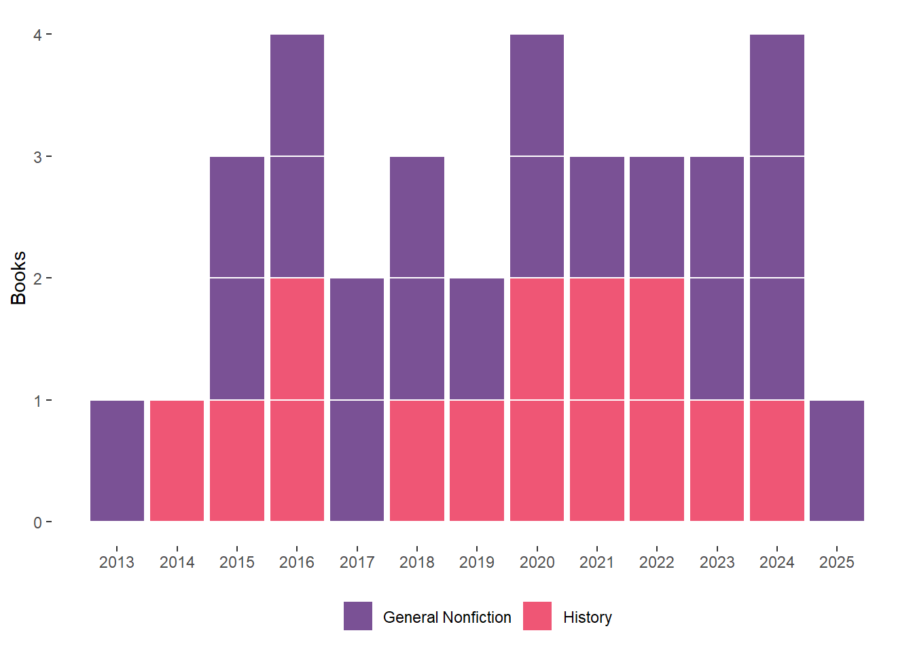

Several years ago, I resolved to read more books, but was a bit lost as to how go about it. I figured award-winning books were a good start, and no better system than the Pulitzer, which has “History” and “General Non-Fiction” categories that I now try to read from.
My goal is to have read at least one of the finalists from each Pullitzer year (and to see how far back I can go too). The chart below shows the Pullitzer years I’ve covered (as well as how big my pullitzer database is getting).

These are the finalists and winners of general nonfiction and history, and my progress in reading them.